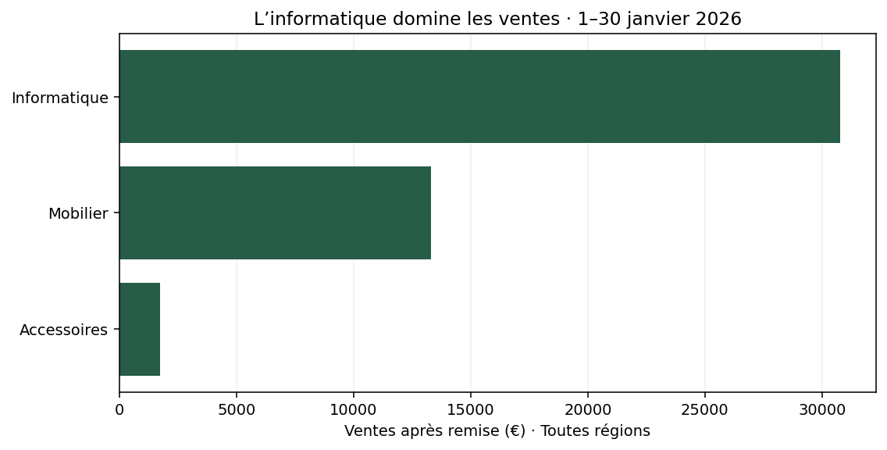
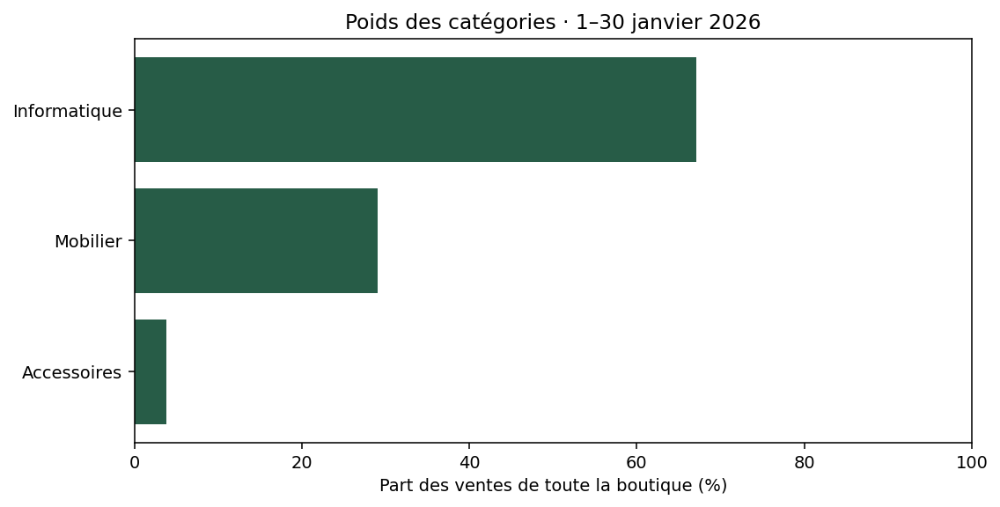
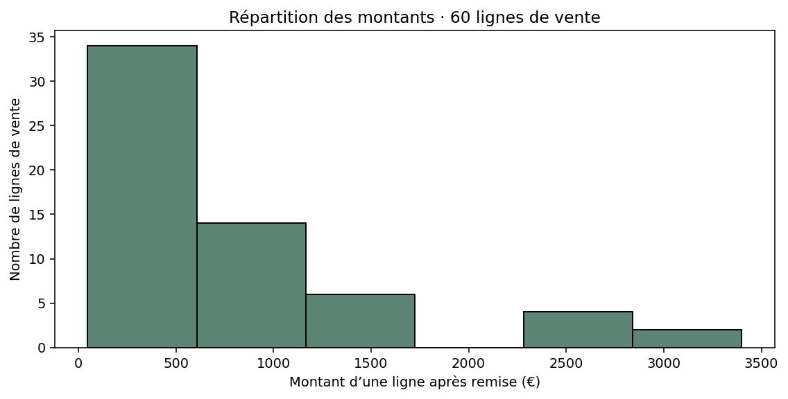

Des rappels utiles, des exemples courts et des petits exercices à corriger ensemble.
Bases déjà acquisesExemple → exercice → correction collectiveQCM avec feedback
Bloc 01 / Introduction
Introduction
Objectif
Choisir un graphique adapté, préparer ses données et produire une figure lisible et vérifiable. Vous avez déjà exécuté du Python et tracé un graphique simple ; nous réactivons les gestes utiles.
Résumé général
On observe un exemple, on fait une petite modification, puis on corrige ensemble. Le QCM de fin de bloc donne une explication après chaque réponse.
ObserverEssayerCorriger ensembleExpliquer
Dans la sandbox, ouvrez notebooks/01_comprendre_graphiques.ipynb et faites une copie à votre nom. Les cellules s’exécutent avec Maj + Entrée. Les chemins /workspace/data et /workspace/resultats sont ceux de Docker.
Depuis le dossier sandbox-notebook, lancez docker compose up --build -d, puis consultez docker compose logs notebook pour le jeton. Ouvrez http://localhost:8890/lab. Seaborn est inclus dans les dépendances : reconstruisez l’image si vous utilisiez la première version.
Bloc 01 / Lire un premier graphique
Matplotlib en un coup d’œil.
Matplotlib transforme des valeurs en graphiques, puis permet d’en régler les éléments et d’exporter l’image. pandas prépare les données ; Matplotlib les représente. Seaborn s’appuie sur Matplotlib pour faciliter certains graphiques statistiques. Nous le verrons après les premiers exemples.
Exemple : ventes par catégorie
Cette figure présente les ventes de janvier regroupées par catégorie.
Figure obtenue avec les données et le code du cours.
Comment lire la figure
L’axe vertical nomme les catégories. L’axe horizontal indique le montant des ventes après remise, en euros. La longueur des barres permet de comparer les montants.
Petit exercice 01
Lire le graphique
Objectif : Lire le graphique Prérequis : Exemple juste au-dessus.
Quelle catégorie réalise le plus de ventes ?
Livrable : Une réponse dans une phrase. Critères de réussite : La phrase nomme la catégorie et s’appuie sur sa barre.
Travaillez sur les données fournies, sans saisir les résultats attendus à la place du calcul.
Indice 1
Comparez la longueur des trois barres.
Bloc 01 / Charger et comprendre
Lire le fichier, vérifier le grain.
Une ligne du fichier représente une ligne de vente. Une commande peut en contenir plusieurs. Le CSV reprend à l’identique les données du TP Tableau : trois régions, trois catégories, six produits, du 1er au 30 janvier 2026.
Ventes est le montant après remise : quantité × prix unitaire × (1 − remise). Exemple : 2 écrans × 220 € × (1 − 0,05) = 418 €. Le fichier ne contient ni coûts ni profits.
Python · sandbox-notebook
import pandas as pd
import matplotlib.pyplot as plt
ventes = pd.read_csv("/workspace/data/commandes.csv", parse_dates=["Date"])
print("Nombre de lignes :", len(ventes))
print("Nombre de commandes :", ventes["Commande"].nunique())
print("Chiffre d'affaires :", ventes["Ventes"].sum())
ventes.head()
Lecture du code et résultat
read_csv ouvre le fichier dans la sandbox Docker ; parse_dates transforme Date en dates. len compte les lignes, nunique les commandes distinctes et sum additionne les ventes. head() montre les cinq premières lignes. Résultat attendu : 60 lignes, 30 commandes, 45 831 €.
Petit exercice 02
Combien de produits ?
Objectif : Combien de produits ? Prérequis : Exemple juste au-dessus.
Prédisez ce que compte ventes["Produit"].nunique(), puis exécutez-le. Expliquez pourquoi 60 lignes ne signifie pas 60 commandes.
Livrable : Une valeur et une phrase. Critères de réussite : Six produits distincts ; une commande peut contenir plusieurs lignes.
Travaillez sur les données fournies, sans saisir les résultats attendus à la place du calcul.
Indice 1
Reprenez le comptage de Commande.
Indice 2
Changez uniquement le nom de la colonne.
Bloc 01 / Préparer puis tracer
Des lignes aux barres.
Pour comparer les ventes par catégorie, il faut d’abord additionner les montants de chaque groupe. Matplotlib reçoit les résultats : barh ne réalise pas cette addition.
Figure : fig
Le document entier, sa taille et son export.
Axes : ax
Une zone de dessin, avec ses marques, son titre et ses axes gradués.
Figure obtenue avec les données et le code du cours.
Python · sandbox-notebook
par_categorie = ventes.groupby("Categorie")["Ventes"].sum().sort_values()
fig, ax = plt.subplots(figsize=(8, 4), layout="constrained")
ax.barh(par_categorie.index, par_categorie.values, color="#275c47")
ax.set_title("Ventes par catégorie · 1–30 janvier 2026")
ax.set_xlabel("Ventes après remise (€)")
fig.savefig("/workspace/resultats/01_categories.png", dpi=140, bbox_inches="tight")
plt.show()
Lecture du code et résultat
groupby forme les groupes, sum calcule leurs totaux, puis sort_values trie la Series avec ses étiquettes. subplots crée fig et ax ; figsize règle la taille, layout ajuste les marges. barh associe l’index aux montants. La première barre est en bas : le tri croissant place la plus grande en haut. set_title et set_xlabel donnent le contexte. savefig exporte le document dans le dossier prévu par Docker ; show l’affiche. Contrôle : les trois barres totalisent 45 831 €. La taille est en pouces, dpi règle la résolution et bbox_inches évite de couper les textes.
Petit exercice 03
Comparer les régions
Objectif : Comparer les régions Prérequis : Exemple juste au-dessus.
Reprenez l’exemple en regroupant par Region. Adaptez le titre et enregistrez 01_regions.png. Quelle région arrive en tête ?
Livrable : Une figure et une observation chiffrée. Critères de réussite : Trois barres ; Nord en tête ; total conservé.
Travaillez sur les données fournies, sans saisir les résultats attendus à la place du calcul.
Indice 1
Changez la colonne dans groupby.
Indice 2
Triez la Series entière avant de transmettre index et values.
Bloc 01 / Rendre la figure fiable
Un graphique lisible doit être juste.
Ajoutons un titre qui répond à la question, une unité, le périmètre et une grille légère. Pour des barres de montants positifs, l’origine à zéro permet de comparer les longueurs.

Figure obtenue avec les données et le code du cours.
Python · sandbox-notebook
par_categorie = ventes.groupby("Categorie")["Ventes"].sum().sort_values()
fig, ax = plt.subplots(figsize=(8, 4), layout="constrained")
ax.barh(par_categorie.index, par_categorie.values, color="#275c47")
ax.set_title("L’informatique domine les ventes · 1–30 janvier 2026")
ax.set_xlabel("Ventes après remise (€) · Toutes régions")
ax.set_xlim(left=0)
ax.grid(axis="x", alpha=0.2)
ax.set_axisbelow(True)
fig.savefig("/workspace/resultats/01_lisible.png", dpi=140, bbox_inches="tight")
plt.show()
Lecture du code et résultat
set_xlim(left=0) fixe le début de l’axe horizontal ; grid(axis="x", alpha=0.2) trace une grille légère. set_axisbelow(True) la place derrière les barres. Les données sont identiques à l’exemple précédent ; seule la présentation évolue.
Petit exercice 04
Réparer un graphique trompeur
Objectif : Réparer un graphique trompeur Prérequis : Exemple juste au-dessus.
Exécutez le code ci-dessous. Comparez ses barres au tableau de sommes. Corrigez l’association des catégories et montants, puis rendez le titre et l’unité explicites.
Livrable : Une figure corrigée et la cause du bug. Critères de réussite : Informatique retrouve 30 776 € ; la justification explique pourquoi le total seul ne suffit pas.
Travaillez sur les données fournies, sans saisir les résultats attendus à la place du calcul.
Indice 1
Comparez l’ordre des noms et celui des valeurs.
Indice 2
sort_values() garde chaque valeur avec son index. sorted(totaux.values) ne le fait pas.
Bloc 01 / Mesurer une part du total
Quel poids dans l’ensemble ?
La part d’une catégorie est son montant divisé par le total du périmètre, multiplié par 100. Ici, Informatique représente 30 776 / 45 831 × 100 ≈ 67,15 %.
Le dénominateur fait partie de la définition : « part des ventes de toute la boutique » n’est pas « part des ventes du Sud ».

Figure obtenue avec les données et le code du cours.
Python · sandbox-notebook
parts = par_categorie / par_categorie.sum() * 100
print(parts.round(2))
fig, ax = plt.subplots(figsize=(8, 4), layout="constrained")
ax.barh(parts.index, parts.values, color="#275c47")
ax.set_title("Poids des catégories · 1–30 janvier 2026")
ax.set_xlabel("Part des ventes de toute la boutique (%)")
ax.set_xlim(0, 100)
fig.savefig("/workspace/resultats/01_parts.png", dpi=140, bbox_inches="tight")
plt.show()
Lecture du code et résultat
La division applique le même total à chaque montant de la Series. * 100 exprime la fraction en pourcentage. round(2) sert à afficher, sans modifier les valeurs utilisées pour le tracé. Les parts non arrondies totalisent 100 % ; un petit écart est possible après arrondi.
Petit exercice 05
Le poids des régions
Objectif : Le poids des régions Prérequis : Exemple juste au-dessus.
Calculez les parts de vente des trois régions et représentez-les. Écrivez le dénominateur utilisé dans votre commentaire.
Livrable : Des barres en pourcentage et une phrase. Critères de réussite : La somme des parts non arrondies vaut 100 % ; le Nord représente environ 41,41 %.
Travaillez sur les données fournies, sans saisir les résultats attendus à la place du calcul.
Indice 1
Réutilisez les sommes par région.
Indice 2
Divisez chaque somme régionale par le total de ces sommes.
Bloc 01 / Situer Seaborn
Une autre façon de construire le même graphique.
Un histogramme compte les observations dans des intervalles de valeurs. Ici, on étudie les montants des 60 lignes de vente, pas les paniers des 30 commandes. Le nombre d’intervalles change la finesse de lecture.
Exemple Matplotlib

Figure obtenue avec les données et le code du cours.
Python · sandbox-notebook
fig, ax = plt.subplots(figsize=(8, 4), layout="constrained")
ax.hist(ventes["Ventes"], bins=6, color="#275c47", edgecolor="white")
ax.set_title("Répartition des montants · 60 lignes de vente")
ax.set_xlabel("Montant d’une ligne après remise (€)")
ax.set_ylabel("Nombre de lignes de vente")
fig.savefig("/workspace/resultats/01_histogramme.png", dpi=140, bbox_inches="tight")
plt.show()
Exemple Seaborn
Python · sandbox-notebook
import seaborn as sns
fig, ax = plt.subplots(figsize=(8, 4), layout="constrained")
sns.histplot(data=ventes, x="Ventes", bins=6, ax=ax, color="#275c47")
ax.set_title("Répartition des montants · 60 lignes de vente")
ax.set_xlabel("Montant d’une ligne après remise (€)")
ax.set_ylabel("Nombre de lignes de vente")
fig.savefig("/workspace/resultats/01_seaborn.png", dpi=140, bbox_inches="tight")
plt.show()
Lecture du code et résultat
ax.hist reçoit une colonne de nombres ; sns.histplot reçoit la table et le nom du champ. Dans les deux cas, bins=6 demande six intervalles. Avec ax=ax, Seaborn dessine dans notre Axes : les réglages et l’export restent ceux de Matplotlib. Certaines autres fonctions Seaborn agrègent automatiquement : par exemple, barplot estime une moyenne par défaut, pas une somme de ventes.
Petit exercice 06
Changer la finesse de lecture
Objectif : Changer la finesse de lecture Prérequis : Exemple juste au-dessus.
Avant d’exécuter, prédisez l’effet de bins=3 à la place de bins=6 dans histplot. Faites le changement et expliquez ce qui reste identique.
Livrable : Un histogramme et une observation. Critères de réussite : Trois intervalles plus larges ; toujours 60 observations au total.
Travaillez sur les données fournies, sans saisir les résultats attendus à la place du calcul.
Indice 1
Le paramètre bins agit sur les intervalles.
Indice 2
Il ne filtre aucune ligne et ne transforme pas les lignes en commandes.
Bloc 01 / Le fil rouge
Le carnet visuel de la boutique.
Contexte et utilisateurs : une responsable commerciale veut des graphiques pour comparer les ventes et suivre des indicateurs. Chaque figure doit répondre à une question et pouvoir être reproduite.
Organisation : les données alimentent pandas ; les Series et DataFrames préparent les mesures ; Matplotlib produit les Figures ; les notebooks conservent les raisonnements ; resultats accueille les PNG.
Jalon
Production vérifiable
Erreur à repérer
Bloc 1
Barres par région et parts du total ; unités et dénominateur explicites.
Confondre lignes et commandes ou désassocier noms et montants.
Bloc 2
Courbes et barres des indicateurs ; commentaire sur juin et sur le semestre.
Confondre variation, cumul et moyenne des taux.
Livrables : vos deux carnets complétés, les figures des exercices et vos interprétations. Validation : mêmes résultats après redémarrage du noyau, références nommées et limites reconnues.
Cas d’usage professionnel : une équipe commerciale peut partager ces images dans un rapport. Le contrôle des mesures rend les comparaisons vérifiables ; la figure ne démontre pas les causes d’une hausse ou d’une baisse.
Extension facultative : refaire la comparaison des catégories sur une seule région, en précisant le filtre et le nouveau total.
Bloc 01 / Fin de bloc · QCM
Retenir avant le QCM.
Fiche de révision
pandas Calculer avant de tracer.
Figure / Axes Document / zone de dessin.
Barres Comparer des catégories.
Courbe Suivre une chronologie.
Histogramme Compter dans des intervalles.
Part du total Composante / total du périmètre × 100.
Erreurs fréquentes
Tracer les lignes brutes comme si elles étaient déjà additionnées ; trier les montants seuls ; omettre unité ou périmètre ; lire un nombre de lignes comme un nombre de commandes.
Questions de révision
Quand choisir des barres plutôt qu’une courbe ?
Qui calcule les sommes avant le tracé ?
Quelle différence entre Figure et Axes ?
Pourquoi trier les noms avec les valeurs ?
Quel dénominateur utilise une part du total ?
Quel grain utilise notre histogramme ?
Résumé final
Préparez les valeurs avec pandas. Choisissez la représentation selon la question. Ciblez un Axes, rendez le titre et l’unité explicites, contrôlez les chiffres et exportez. Rejouez le carnet depuis un noyau neuf.
Fin du bloc 01
QCM avec feedback
Choisissez une réponse, puis lisez son explication avant de poursuivre.